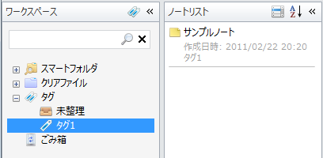
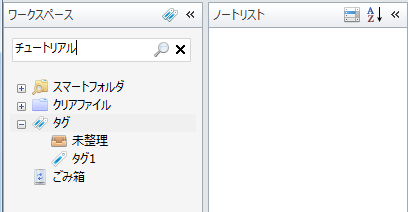
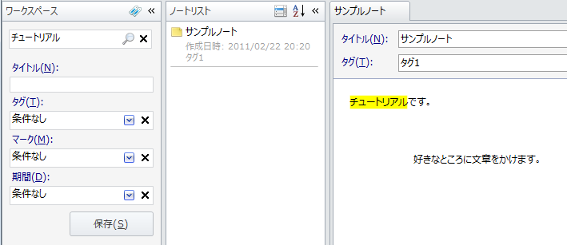
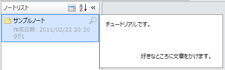

ノートを探す
タグで探す
タグで探すにはワークスペースビューでタグを選択するだけです。 選択したタグが付けられているノートの一覧が「ノートリスト」ビューに表示されます。

検索で探す
ノートを全文検索で探すこともできます。 ワークスペースペイン上部の「検索条件」テキストボックスに， 探したいノートのタイトルや本文に含まれているキーワードを入力してEnterキーを押すか「検索」アイコンをクリックします。
先ほど作成したノートには「チュートリアルです。」という文章が含まれていたので， ここでは「チュートリアル」と入力して検索してみましょう。

ワークスペースペインが検索用の表示に切り替わり， 検索結果がノートリストペインに表示されます。 この検索用の表示を「クエリビルダ」と呼びます。 「クエリビルダ」を使ってキーワードの他にタイトルやタグなどの条件も組み合わせてノートを検索することができます。 また，クエリビルダを表示している間はノートエディタで検索キーワードがハイライト表示されます。

ワークスペースペインを元の表示に戻すには， 「検索条件」テキストボックスでCtrl+Enterキーを押すか，バツ印の「検索終了」アイコンをクリックします。
ノートをプレビュー表示する
ノートリストの項目の右上に表示される「プレビュー」アイコンをクリックすると ノートのプレビューを表示することができます。 そのまま他の項目にマウスカーソルを移動するとその項目のノートがプレビュー表示されます。 ノートリスト上をもう一度クリックするか，ノートリスト外にマウスカーソルを移動するとノートのプレビューを閉じます。
